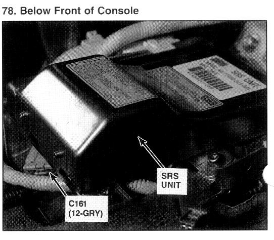

Operation CHARM
: Car repair manuals for everyone.
Home
>>
Acura
>>
1993
>>
Vigor L5-2451cc 2.5L SOHC G25A4 FI
>>
Repair and Diagnosis
>>
Restraints and Safety Systems
>>
Air Bag Systems
>>
Air Bag Control Module
>>
Locations
Air Bag Control Module: Locations
Supplemental Restraint System (SRS) Module Location

Below Front Of Console